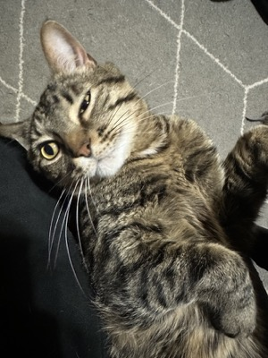

Hades Bot is a Discord bot project I actively develop as a more advanced and expandable system. Unlike smaller feature-specific bots, Hades Bot is an ongoing application where I continue adding commands, improving architecture, and integrating external services. The project combines backend logic, API integration, deployment, command design, and long-term maintainability.
The goal is to create a reliable, feature-rich bot that supports utility features, conversational responses, and future extensibility while maintaining a modular structure that is easy to update over time.

The bot was designed using a modular command structure so new features could be added without rewriting the entire application. Commands were separated into organized folders and files, making it easier to maintain and expand as functionality increased.
I integrated external AI services so the bot could respond dynamically instead of relying only on fixed command outputs. This required handling API requests, managing environment variables securely, and updating model usage when providers deprecated older models.
The bot was deployed on a cloud-hosted Linux server, which required process management, environment configuration, and remote maintenance. This provided experience building application logic while keeping a real service running and troubleshooting deployment-related issues.
A key challenge was designing the bot so it could grow over time without becoming difficult to manage. Modularizing commands and separating logic by feature made the codebase more maintainable.
Another challenge involved API model changes and deprecations. Since AI model providers may remove or replace older models, I updated integration logic and error handling to keep the bot functional.
Deployment and uptime were also important. Running the bot on a Linux server required process management, restart handling, and configuration fixes when external services changed.
Hades Bot demonstrates long-term project development, backend programming, external API integration, and deployment experience. It is one of my stronger personal projects because it reflects both software development and practical operations work.